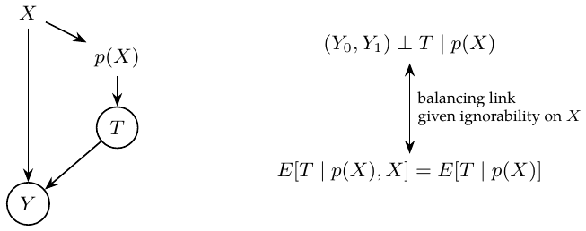

Chapter 11. Propensity scores
Another way to address confounding is the propensity score \(p(X)=P(T=1\mid X)\). The graph connects \(X\to p(X)\to T\to Y\), with \(X\to Y\). For binary treatment the balancing identity is \[E[T\mid p(X),X]=E[T\mid p(X)].\] If \((Y_0,Y_1)\perp T\mid X\), this balancing property lets us reduce the adjustment to \(p(X)\): \((Y_0,Y_1)\perp T\mid p(X)\). Overlap, \(0<p(X)<1\), is needed for the two treatment-arm means.
My example. Take two individuals, one treated and one control. If their probabilities of treatment are the same, I can compare them within that score group even if their \(X\) values differ: the argument balances distributions, not every individual pair. \[\begin{aligned} E[T\mid p(X),X]&=E[T\mid X]=p(X), &&\text{since }p(X)\text{ is a function of }X,\\ E[T\mid p(X)]&=E[E[T\mid p(X),X]\mid p(X)]\\ &=E[p(X)\mid p(X)]=p(X). \end{aligned}\]
Inverse propensity weighting (IPW).
The conditional difference can be rewritten as \[\begin{aligned} E[Y\mid X,T=1]-E[Y\mid X,T=0] ={}&p(X)E\!\left[\frac{Y}{p(X)}\,\middle|\,X,T=1\right]\\ &-\{1-p(X)\}E\!\left[\frac{Y}{1-p(X)}\,\middle|\,X,T=0\right]. \end{aligned}\] ?My understanding. We observe treatment for individual \(i\), but the probability that \(i\) would be treated is only \(p(X_i)\), determined by \(X\). Give every observed treated individual weight \(1/p(X_i)\) to correct for this. If \(p(X_i)\) is small, that observation contributes little to the unweighted outcome distribution; increase its representation with the reciprocal weight. For \(T=1\) and \(T=0\), the weights are respectively \(1/p(X)\) and \(1/(1-p(X))\). This reconstructs a population in which everyone is treated (\(Y_1\)) and another in which everyone is untreated (\(Y_0\)), and ATE is their difference.
Weighted outcome dispersion is \[\hat\sigma_w^2=\frac{\sum_{i=1}^n w_i(Y_i-\hat\mu)^2}{\sum_{i=1}^n w_i}.\] But the estimated propensity \(\hat p(X)\) itself contains error. Adding nonconfounding covariates carelessly can make the propensity estimator highly variable. Treated people may have a higher estimated probability of treatment than untreated people. My warning is that very large weights—for example, values above twenty—can inflate variance; twenty is a practical reminder, not a universal cutoff. This weighted dispersion is not the sampling variance of the IPW ATE estimator.
Propensity-score matching.
Replace matching distance with \(p(X)\). My concern is whether this improves the causal comparison. Better prediction of treatment does not necessarily improve causal estimation and can increase variance. If treated and untreated propensity-score distributions lack overlap, matching encounters problems.

Propensity adjustment: balancing and conditional exchangeability are connected under the stated assumption.